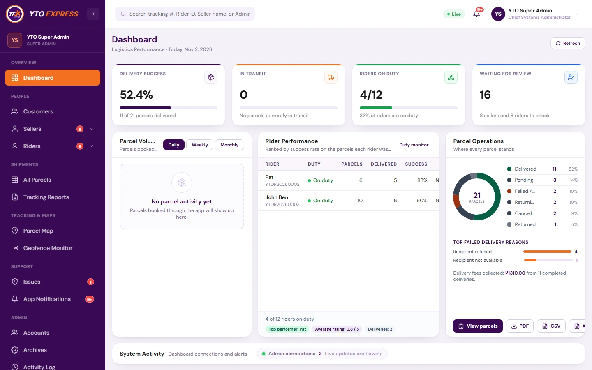
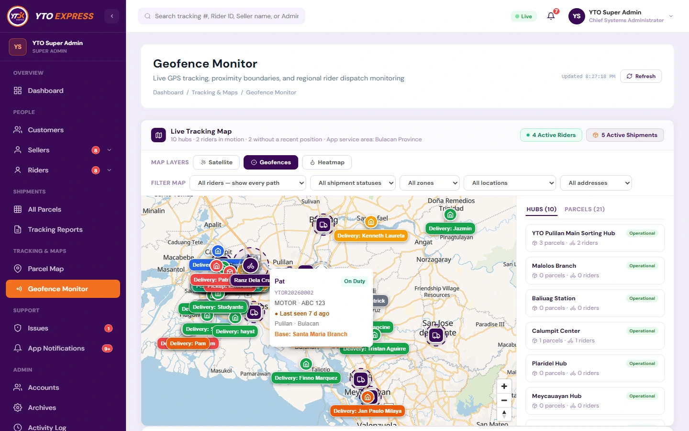
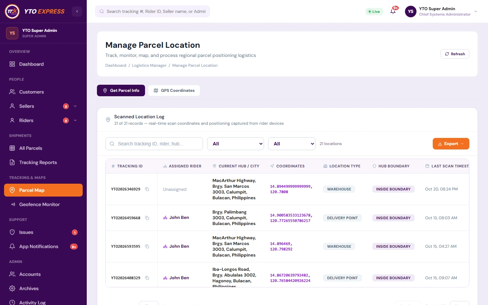

Capstone Project
Web Admin & Dispatch System
2025–2026 (Capstone 1) & 2026–2027 (Capstone 2)
YTO Express — Admin & Dispatch Web Portal
The central web command center for the YTO Express logistics ecosystem, enabling super-admins and hub coordinators to oversee parcel triage, monitor active riders via live GPS, manage seller accounts, and resolve delivery disputes.
10
Bulacan Hubs Mapped
3 Roles
RBAC Admin Tiers
Live SSE
Bridge Event Stream
System Components & Architecture
- Super Admin Analytics Dashboard: Real-time KPI progress cards, rider performance rankings, parcel operations donut telemetry, top failed delivery reason breakdowns, and PDF/CSV/XLSX reporting.
- Regional Geofence & Hub Monitor: Interactive Bulacan tracking map overseeing 10 sorting hubs and branches with Satellite/Geofence/Heatmap layers, live rider callout cards, and proximity boundary alerts.
-
Scanned Parcel Location Log & Bridge API: Live coordinate intake table verifying warehouse vs. delivery-point scans (
INSIDE BOUNDARY), backed by Node.js, Express, MongoDB, and SSE real-time updates.
Cross-Platform Bridge Pipeline:
Seller App Booking
Bridge REST Sync
10-Hub Geofence Triage
Live SSE Admin Telemetry
Admin Modules:
Analytics & Donut Telemetry
10-Hub Geofence Monitor
Scanned Location Log
React 19
Vite
Tailwind CSS
Node.js
Express
MongoDB
JWT & OTP
Leaflet / Maps


